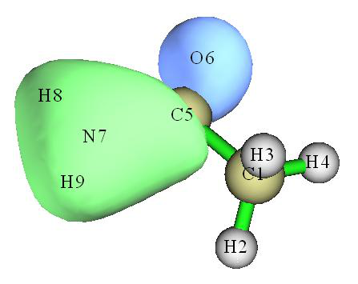
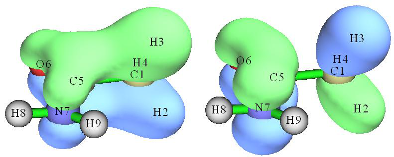
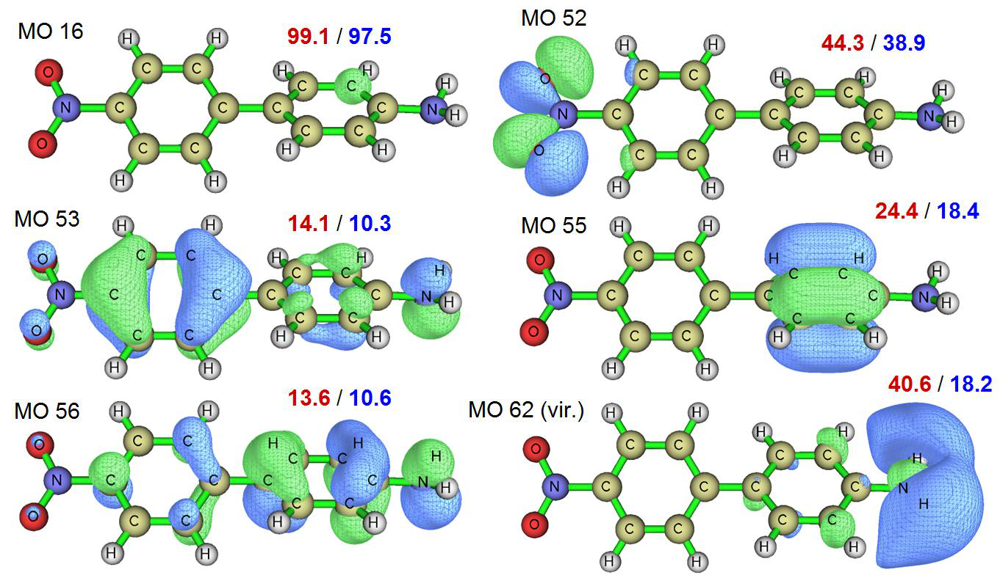
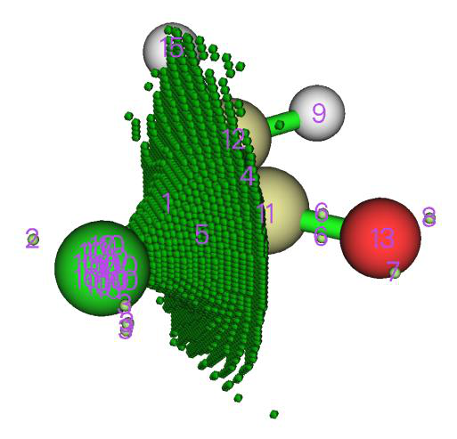
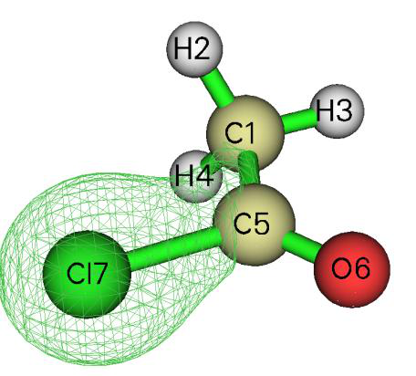

分子轨道组成分析（Molecular orbital composition analysis）¶
Multiwfn manual, p.600–616.英文原文见同名 English 章节。 Images:
../imgs/.
4.7.11 计算 AIM 电荷（Calculate AIM charges）¶
我们在本例中计算 CH3NH2 的 AIM 电荷。启动 Multiwfn 并输入 examples\CH3NH2.wfn
Multiwfn 交互
- 7 — 布居分析与原子电荷计算（Population analysis and atomic charge calculations）
- 14 — AIM 电荷（AIM charge）
- 2 — 中等质量格点。这是在开销与精度之间的良好折中。格点质量越高，开销越高，而积分精度越好(Medium-quality grid. This is a good compromise between cost and accuracy. The higher the grid quality, the higher the cost, while better the integration accuracy)
然后你得到以下输出
Final atomic charges:
Atom 1(C ): 0.38812508
Atom 2(H ): -0.01581265
Atom 3(H ): -0.01581168
Atom 4(H ): -0.04790806
Atom 5(N ): -0.98865587
Atom 6(H ): 0.34001793
Atom 7(H ): 0.34004525
可以看出 AIM 电荷在化学上不是很合理，甲基上的两个氢原子 H2 和 H3 竟然带有轻微负电荷，这明显与氢和碳电负性之间的关系相矛盾。这是 AIM 电荷众所周知的缺陷。坦率地说，AIM 电荷基本上没有优点，见我对原子电荷的综述以获得全面比较和讨论：Partial Charges, In Exploring Chemical Concepts Through Theory and Computation. WILEY-VCH GmbH: Weinheim (2024); pp. 161-187. DOI: 10.1002/9783527843435.ch6。
4.8 分子轨道组成分析（Molecular orbital composition analysis）¶
在本节中，我将展示如何使用各种方法分析分子轨道组成。所示方法也适用于任何其他类型轨道，如自然轨道、自然跃迁轨道（NTOs）和定域分子轨道（LMOs）。关于轨道组成分析的细节可见第 3.10 节。不同方法的优缺点在我的论文 Acta Chim. Sinica, 69, 2393 (2011, http://sioc-journal.cn/Jwk_hxxb/CN/abstract/abstract340458.shtml) 中有非常详细的讨论，欢迎引用。如果你能阅读中文，还可参阅我的博文“轨道成分的计算方法”(http://sobereva.com/131)。
简单地说，如果你的目的仅是获得轨道中的原子组成，Hirshfeld/Becke 方法可能是最稳健方便的方法，见第 4.8.3 节；如果你还想获得原子轨道组成，那么第 4.8.2 节示例的 NAO 方法可能是最佳选择。第 4.8.1 节示例的 Mulliken 方法通常也效果良好，但不应使用弥散函数。
4.8.1 用 Mulliken 方法分析乙酰胺（Analyze acetamide by Mulliken method）¶
在本例中我们采用 Mulliken 方法首先分析乙酰胺第 6 个分子轨道的组成，然后分析哪些轨道对甲酰胺部分与甲基之间成键有主要贡献。注意 Mulliken 方法与弥散函数不兼容，如果涉及它们，你应选择其他轨道组成方法（如 NAO、Hirshfeld...）或将它们从基组中删除。
启动 Multiwfn 并输入以下命令 examples\CH3CONH2.fch // 对于此类分析，你必须使用 .mwfn/.fch/.molden/.gms 文件作为输入（You have to use .mwfn/.fch/.molden/.gms file as input for this type of analysis）
Multiwfn 交互
- 8 — 轨道组成分析（Orbital composition analysis）
- 1 — 使用 Mulliken 分区（Use Mulliken partition）
- 6 — 轨道序号为 6（注意如屏幕提示所示，你也可在处输入轨道标记，例如 h-3 对应 HOMO-3，l+1 对应 LUMO+1 等）(The orbital index is 6 (Note that as shown in the prompt on the screen, you can also input orbital label here, for example h-3 corresponds to HOMO-3, l+1 corresponds to LUMO+1, etc.))
基函数、壳层和原子的组成随即打印，见下。
Threshold of absolute value: > 0.50000 % // Only the basis functions with composition
larger than 0.5% will be printed, you can change the threshold by “compthres” parameter
in settings.ini.
Orbital: 6 Energy(a.u.): -0.905290 Occ: 2.000000 Type: Alpha&Beta
Basis Type Atom Shell Local Cross term Total
23 S 5(C ) 14 0.44902 % 0.67507 % 1.12409 %
24 X 5(C ) 15 0.31240 % 0.50522 % 0.81762 %
25 Y 5(C ) 15 4.25271 % 5.88221 % 10.13493 %
29 Y 5(C ) 17 0.00777 % -0.61063 % -0.60286 %
38 S 6(O ) 20 3.50037 % 2.65507 % 6.15544 %
42 S 6(O ) 22 3.29488 % 1.71316 % 5.00803 %
53 S 7(N ) 26 15.20411 % 15.32688 % 30.53098 %
57 S 7(N ) 28 16.89006 % 17.40040 % 34.29046 %
61 XX 7(N ) 30 0.00774 % 0.58279 % 0.59053 %
63 ZZ 7(N ) 30 0.02793 % -0.98090 % -0.95297 %
67 S 8(H ) 31 1.27855 % 3.03091 % 4.30946 %
69 S 9(H ) 33 1.52931 % 3.60949 % 5.13880 %
Sum up those listed above: 46.75484 % 49.78967 % 96.54451 %
Sum up all basis functions: 51.95605 % 48.04395 % 100.00000 %
Composition of each shell, threshold of absolute value: > 0.500000 %
Shell 14 Type: S in atom 5(C ) : 1.12409 %
Shell 15 Type: P in atom 5(C ) : 10.95268 %
Shell 17 Type: P in atom 5(C ) : -0.97156 %
Shell 20 Type: S in atom 6(O ) : 6.15544 %
Shell 22 Type: S in atom 6(O ) : 5.00803 %
Shell 26 Type: S in atom 7(N ) : 30.53098 %
Shell 28 Type: S in atom 7(N ) : 34.29046 %
Shell 31 Type: S in atom 8(H ) : 4.30946 %
Shell 33 Type: S in atom 9(H ) : 5.13880 %
Composition of different types of shells (%):
s: 88.193 p: 11.391 d: 0.416 f: 0.000 g: 0.000 h: 0.000
Composition of each atom:
Atom 1(C ) : 1.17249 %
Atom 2(H ) : 0.05445 %
Atom 3(H ) : 0.03212 %
Atom 4(H ) : 0.00817 %
Atom 5(C ) : 11.81245 %
Atom 6(O ) : 11.63274 %
Atom 7(N ) : 65.50085 %
Atom 8(H ) : 4.47022 %
Atom 9(H ) : 5.31651 %
Orbital delocalization index: 46.15
结果表明，氮对轨道6的贡献最大（65.5%），且该贡献由两个S壳层组成（30.5%和34.3%）。相邻碳的P壳层和氧的S壳层也有轻微贡献（均约为12%）。我们可以通过查看等值面图来检验该结果是否合理（此处等值面值设为0.1）：
从图中可以看出，轨道波函数数值较大的区域主要局域在氮原子周围，且没有节面，因此该区域的轨道波函数应由s型原子轨道构成。等值面也略微侵入原子C5和O6的区域，因此它们应对MO 6有较小贡献，而且，由于在C5处存在节面，用于构成MO 6的C5原子轨道应为p型。显然，这些结论与组成分析的结果相当吻合。组成分析的优势在于结果可以定量化，而通过直观观察只能得出定性结论，对于某些复杂体系甚至连定性结论都无法得出。
输出末尾打印的“轨道离域指数（Orbital delocalization index）”与轨道空间离域程度密切相关，这一点将在4.8.5节中详细介绍。
现在让我们找出哪些分子轨道对

甲酰胺部分和甲基之间成键有主要贡献。启动Multiwfn并输入
examples\CH3CONH2.fch 8 // 轨道组成分析（Orbital composition analysis） -1 // 定义碎片1(Define fragment 1) a 1-4 // 将原子1、2、3、4（甲基）中的全部基函数加入碎片1 q // 保存碎片并返回上一级菜单 -2 // 定义碎片2(Define fragment 2) a 5-9 // 将原子5、6、7、8、9（甲酰胺部分）中的全部基函数加入碎片2 q 4 // 用Mulliken分析打印全部轨道中碎片1的组成以及碎片1和2之间的交叉项。如果你只定义了碎片1，则只打印碎片1的组成
由于打印的信息量巨大，此处仅摘录全部占据轨道中的交叉项组成：
Cross term between fragment 1 and 2 and their individual parts:
Orb# Type Ene(a.u.) Occ Frag.1 part Frag.2 part Total
1 AB -19.1036 2.00000 -0.0013 % -0.0013 % -0.0026 %
2 AB -14.3492 2.00000 -0.0001 % -0.0001 % -0.0003 %
3 AB -10.2819 2.00000 0.0606 % 0.0606 % 0.1211 %
4 AB -10.1845 2.00000 0.0604 % 0.0604 % 0.1209 %
5 AB -1.0376 2.00000 0.3535 % 0.3535 % 0.7070 %
6 AB -0.9053 2.00000 0.7295 % 0.7295 % 1.4590 %
7 AB -0.7387 2.00000 7.9504 % 7.9504 % 15.9008 %
8 AB -0.5884 2.00000 -1.8755 % -1.8755 % -3.7510 %
9 AB -0.5410 2.00000 -0.7506 % -0.7506 % -1.5011 %
10 AB -0.4663 2.00000 3.8098 % 3.8098 % 7.6197 %
11 AB -0.4472 2.00000 5.5270 % 5.5270 % 11.0539 %
12 AB -0.4016 2.00000 -0.3983 % -0.3983 % -0.7965 %
13 AB -0.3961 2.00000 -0.4274 % -0.4274 % -0.8549 %
14 AB -0.3674 2.00000 -5.8826 % -5.8826 % -11.7653 %
15 AB -0.2661 2.00000 0.1192 % 0.1192 % 0.2383 %
16 AB -0.2438 2.00000 -6.0931 % -6.0931 % -12.1863 %
轨道i中碎片1和2之间交叉项组成与相应轨道占据数的乘积，即为轨道i所贡献的它们之间的Mulliken键级。从上述信息可以看出，MO 7和11有利于成键，因为其组成相对较大，而MO 14和16不利于成键。MO 11（左侧）和14（右侧）的等值面如下所示，可见组成分析的结果是合理的。
如你所见，使用Mulliken方法分析轨道组成非常方便。然而，Mulliken方法的结果对基组敏感，不如下面介绍的NAO方法和Hirshfeld方法稳健。特别地，当计算中涉及弥散函数时，切勿使用Mulliken方法，否则结果将毫无意义！
4.8.2 用自然原子轨道方法分析水¶
在本例中，我们用3.10.4节讨论的自然原子轨道（NAO）方法分析水的分子轨道组成。与Mulliken或类Mulliken方法（如SCPA和Stout-Politzer）相比，NAO方法具有好得多的基组稳定性（即对基组的选择不敏感）和更强的理论基础。
注：NAO绝不是获得MO中原子轨道组成的唯一途径，你也可以用Mulliken或类似方法（如SCPA）来完成。基函数与原子轨道之间的对应关系可根据基组定义确定，或通过布居分析手段确定，见4.7.6节。
执行NAO方法需要在NAO基下的MO系数矩阵，该矩阵无法由Multiwfn自身生成，但Multiwfn可以利用独立的NBO程序或量子化学软件内嵌的NBO模块输出的包含该矩阵的信息。Gaussian程序内嵌的NBO 3.1模块即为L607。下面是水的Gaussian输入文件，它将输出我们所需的矩阵。注意，Gaussian任务应为单点任务，不要连同几何优化一起做！
## HF/6-31g* pop=nboread
Title Card Required
0 1
O 0.00000000 0.00000000 0.11472000
H 0.00000000 0.75403100 -0.45888100
H 0.00000000 -0.75403100 -0.45888100
$NBO NAOMO $END
[blank line]
[blank line]
其中，pop=nboread关键词表示将$NBO和$END包围的文本，即NAOMO，传递给NBO模块。NAOMO关键词告诉NBO模块输出NAO基下的MO系数矩阵。
假设Gaussian输出文件名为H2O_NAOMO.out（可在

“examples”文件夹中找到），我们启动Multiwfn并输入：
examples/H2O_NAOMO.out // 注意在当前情况下不要用.fch作为输入文件 8 // 进入轨道组成分析模块（orbital composition analysis module） 7 // 进入NAO分析功能（NAO analysis function） 你会发现默认输出模式为“只显示核与价NAO(Only show core and valence NAOs)”。核与价NAO与实际原子轨道有一一对应关系，如果待分析的MO是占据轨道，一般只需关注这些NAO，而Rydberg NAO可以忽略。假设我们要分析MO 4，输入
0 // 显示特定MO的轨道组成（Show orbital composition of specific MO） 4 // 分析MO 4 屏幕上将出现以下信息
Note: All Rydberg NAOs/shells or contributions <= 0.50 % will not be printed
NAO# Center Label Type Composition
2 1(O ) S Val( 2s) 8.573 %
9 1(O ) pz Val( 2p) 84.089 %
16 2(H ) S Val( 1s) 3.542 %
18 3(H ) S Val( 1s) 3.542 %
Condensed NAO terms to shells:
Atom: 1(O ) Shell: 2( 2s Val) 8.573 %
Atom: 1(O ) Shell: 5( 2p Val) 84.089 %
Atom: 2(H ) Shell: 8( 1s Val) 3.542 %
Atom: 3(H ) Shell: 10( 1s Val) 3.542 %
Composition of different types of shells (%):
s: 15.761 p: 84.104 d: 0.130 f: 0.000 g: 0.000 h: 0.000
Condensed NAO terms to atoms:
Center Composition
1(O ) 92.899 %
2(H ) 3.548 %
3(H ) 3.548 %
Core composition: 0.031 %
Valence composition: 99.746 %
Rydberg composition: 0.218 %
Orbital delocalization index: 86.55
根据该结果，我们例如可以说，氧的2pz原子轨道对MO 4的贡献为84.09%。上列NAO的贡献（本例中不包括Rydberg组成）也根据其
所属中心加和为原子贡献。
注意，非Rydberg组成之和（即Core + Valence）如上所示不是100%，而是99.777%。为了使物理意义更明确，我个人建议对结果手动做重归一化。例如，2pz的组成应为84.089% / 0.99777 = 84.277%。由于重归一化前后差异仅为0.188%，当前情况下重归一化并非必要。只有当非Rydberg组成不可忽略时（例如大于2%），重归一化才是必不可少的。
计算碎片对特定MO的贡献（Calculate fragment contribution to specific MOs） 输入0返回上一级菜单。接下来，我们分析位于两个氢上的NAO对MO 1~10的贡献。
输入-1进入定义碎片的界面（enter the interface for defining fragment）。如果你输入all，则会列出全部NAO的详细信息（此步可选）：
NAO# Atom&Index Type Set&Shell Occupancy Energy (a.u.)
1 O 1 S Cor( 1S) 1.99992 -20.39645
2 O 1 S Val( 2S) 1.74644 -1.14691
...[ignored]
15 O 1 dz2 Ryd( 3d) 0.00254 2.02361
16 H 2 S Val( 1S) 0.52321 0.33308
17 H 2 S Ryd( 2S) 0.00086 0.70497
18 H 3 S Val( 1S) 0.52321 0.33308
19 H 3 S Ryd( 2S) 0.00086 0.70497
我们输入a 2,3，即把属于原子2和3的全部NAO加入当前碎片。然后输入q保存并退出。从屏幕上打印的提示可以发现，该碎片中包含NAO 16、17、18和19。
然后选择选项1并输入1-8，四个NAO对MO 1~8的贡献将显示如下
Orb.# Core Valence Rydberg Total
1 0.000 % 0.119 % 0.002 % 0.121 %
2 0.000 % 18.556 % 0.054 % 18.611 %
3 0.000 % 26.557 % 0.018 % 26.576 %
4 0.000 % 7.084 % 0.012 % 7.096 %
5 0.000 % 0.000 % 0.000 % 0.000 %
6 0.000 % 35.482 % 46.832 % 82.314 %
7 0.000 % 27.558 % 61.538 % 89.096 %
8 0.000 % 32.433 % 29.568 % 62.002 %
由于碎片中的四个NAO都不是核型，MO中Core项均为0%。Valence和Rydberg项分别对应NAO 16、18和NAO 17、19的贡献。NAO 16和18直接对应H2和H3的1s原子轨道，因此可以说两个氢合计对MO 3贡献26.56%。
本体系前五个MO为双占据。可见Rydberg NAO对占据MO的贡献很低，而它们对虚MO的贡献显著，已不能再忽略。Rydberg NAO的物理意义难以解释，这些NAO并不直接反映原子轨道特征。说两个氢对MO 8贡献32.43%还是62.00%都值得怀疑。尽管似乎可以
采用重归一化过程来“消除”Rydberg组成，但当Rydberg组成过大时，例如大于10%，这种处理会破坏结果的意义。因此一般不建议用NAO方法分析虚MO的原子贡献；对于这种情况，下一节介绍的、3.10.5节引入的Hirshfeld和Becke方法是最好的选择。
4.8.3 用Hirshfeld和Becke方法分析乙酰胺¶
在本节中，我们将先用Hirshfeld方法再用Becke方法分析乙酰胺的MO组成，并与4.8.1节用Mulliken方法得到的结果比较。注意，Hirshfeld和Becke方法只能分析轨道中原子或碎片的组成，而无法获得原子轨道的组成。
启动Multiwfn并输入 examples\CH3CONH2.fch // 你也可以用.wfn和.wfx等文件作为输入。但.wfn和.wfx文件不含虚轨道信息！
8 // 轨道组成分析（Orbital composition analysis） 8 // 使用Hirshfeld划分（Use Hirshfeld partition） Hirshfeld分析需要自由态原子的电子密度，你需要选择一种计算原子密度的方法。选择1使用内建原子密度非常方便，见附录3了解详情；或者，你也可以选择2基于原子.wfn文件计算原子密度，见3.7.3节了解详情。此处我们选择选项1。
然后Multiwfn初始化数据，对于大体系你可能需要等待一会儿。假设你要分析MO 6，则直接输入6，结果将打印在屏幕上，如下所示。（因为积分是数值计算的，所有项之和会略偏离100%，因此Multiwfn会自动对结果归一化。）
Atom 1(C ) : 1.555%
Atom 2(H ) : 0.249%
Atom 3(H ) : 0.155%
Atom 4(H ) : 0.037%
Atom 5(C ) : 14.922%
Atom 6(O ) : 12.109%
Atom 7(N ) : 56.339%
Atom 8(H ) : 6.688%
Atom 9(H ) : 7.946%
C5、O6和N7的组成分别为14.92%、12.11%和56.34%。该结果与Mulliken方法（4.8.1节）得到的结果接近，即分别为11.81%、11.63%和65.50%。事实上，对于占据MO，若未使用弥散基函数，一般Mulliken、NAO和Hirshfeld方法给出相似的结果。
现在让我们查看MO 14至19中7N的组成。我们输入 -2 // 打印原子在一段轨道范围内的贡献（Print atom contribution to a range of orbitals） 7 // 原子序号（Atom index） 14-19 // 轨道范围（Orbital range）
你将看到：
Orb# Type Ene(a.u.) Occ Composition Population
14 Alpha&Beta -0.3674 2.000 16.072% 0.321446
15 Alpha&Beta -0.2661 2.000 48.508% 0.970161
16 Alpha&Beta -0.2438 2.000 6.792% 0.135840
17 Alpha&Beta 0.0410 0.000 12.378% 0.000000
18 Alpha&Beta 0.0762 0.000 21.755% 0.000000
19 Alpha&Beta 0.1252 0.000 14.512% 0.000000
Population of this atom in these orbitals: 1.427447
其中1.427447（即0.321446+0.970161+0.135840）是N7在MO 14~19中的总布居数。
附注：如果指定的轨道范围是1~16，即全部占据MO，则输出值7.1589将是N7的原子布居数，其Hirshfeld原子电荷因此为7.0-7.1589 = -0.1589。
接下来，我们考察氨基对特定轨道——HOMO的贡献。输入以下命令：
-9 // 定义碎片（Define fragment） 7-9 // 氨基中的原子 h // 代表HOMO。你也可以直接输入其序号（16） 如下所示，你不仅可以看到全部原子对该轨道的贡献，还可以看到碎片对该轨道的贡献，8.703%即为6.791%+0.974%+0.938%之和。
[...ignored]
Atom 6(O ) : 69.178%
Atom 7(N ) : 6.791%
Atom 8(H ) : 0.974%
Atom 9(H ) : 0.938%
Fragment contribution: 8.703%
用Becke方法分析轨道组成的步骤与Hirshfeld方法完全相同。此处我们计算MO 6的组成。启动Multiwfn并输入
examples\CH3CONH2.fch 8 // 轨道组成分析（Orbital composition analysis） 9 // 使用Becke划分（Use Becke partition） 6 // 第6个轨道（The 6th orbital） 结果为
Atom 1(C ) : 1.229%
Atom 2(H ) : 0.085%
Atom 3(H ) : 0.049%
Atom 4(H ) : 0.002%
Atom 5(C ) : 14.902%
Atom 6(O ) : 12.070%
Atom 7(N ) : 60.742%
Atom 8(H ) : 4.929%
Atom 9(H ) : 5.992%
可见，该结果与Hirshfeld方法得到的结果非常接近。在Multiwfn中也可以用Hirshfeld-I划分计算轨道组成，但这并不常用，因为生成Hirshfeld-I原子空间需要额外的计算成本，而结果并没有很大改善（用Hirshfeld方法计算的轨道组成已足够可靠和有意义）。
4.8.4 用LOBA/mLOBA方法计算氧化态¶
注：本节的中文版是我的博客文章“在Multiwfn中使用LOBA方法计算氧化态”（http://sobereva.com/362），其中包含更多讨论。
请先阅读3.10.100节以理解LOBA和mLOBA方法的基本思想。这是一种评估氧化态（OS）的简单有用方法。在本节中我将用两个例子说明Multiwfn中的LOBA/mLOBA模块。所用的.fch文件可直接从http://sobereva.com/multiwfn/extrafiles/LOBA.rar下载。
(1) Fe(CN)63- 首先，我们用Gaussian对此体系做常规计算，输入文件为examples\Fe(CN)6_3-.gjf，请自行运行以得到Fe(CN)6_3-.fch文件。LOBA或mLOBA分析需要定域分子轨道（LMO），因此我们用Multiwfn进行轨道定域化。启动Multiwfn并输入以下命令：
Fe(CN)6_3-.fch 19 // 轨道定域化（Orbital localization） 1 // 仅定域占据轨道，这对LOBA/mLOBA分析已足够(Only localize occupied orbitals, this is enough for LOBA/mLOBA analysis) 此时内存中的分子轨道已被替换为LMO。然后输入 8 // 轨道组成分析（Orbital composition analysis） 100 // LOBA/mLOBA分析（LOBA/mLOBA analysis） 50 // 执行LOBA的百分比阈值（Percentage threshold for performing LOBA）
Oxidation state of atom 1(Fe) : 3
Oxidation state of atom 2(C ) : 2
Oxidation state of atom 3(C ) : 2
Oxidation state of atom 4(C ) : 2
Oxidation state of atom 5(C ) : 2
Oxidation state of atom 6(C ) : 2
Oxidation state of atom 7(C ) : 2
Oxidation state of atom 8(N ) : -3
Oxidation state of atom 9(N ) : -3
Oxidation state of atom 10(N ) : -3
Oxidation state of atom 11(N ) : -3
Oxidation state of atom 12(N ) : -3
Oxidation state of atom 13(N ) : -3
The sum of oxidation states: -3
结果看起来合理，与化学直觉很好地吻合。全部氧化态之和正好对应总净电荷-3。然而，LOBA并非没有歧义，阈值的选择高度任意。如果我们输入60而非50，将看到
碳和氧的氧化态变为4和-1，氧化态之和变为21。幸运的是，过渡金属的OS对阈值的选择不那么敏感，只要阈值不设得过小或过大，本例中铁始终保持+3氧化态。通常，评估过渡金属OS最合适的阈值为50~60%。
我强烈建议使用mLOBA而非LOBA。如果你输入m，将得到mLOBA方法的结果，本例中mLOBA与LOBA的结果完全相同。mLOBA完全摆脱了阈值选择的任意性。
(2) 二茂铁（Ferrocene） 对于该体系，我们不仅要考察铁的OS，还要考察C5H5碎片的OS。相应的常规Gaussian输入文件为examples\Ferrocene.gjf，自行运行以获得相应的.fch文件，然后将其载入Multiwfn并如上所示先执行轨道定域化，之后进入LOBA/mLOBA分析界面并输入以下命令：
-1 // 定义碎片（Define fragment） 1-5,7-11 // 构成C5H5碎片的原子序号（Index of the atoms constituting the C5H5 fragment） 50 // 执行LOBA的百分比阈值（Percentage threshold for performing LOBA） 结果为
Oxidation state of atom 1(C ) : 2
Oxidation state of atom 2(C ) : 2
Oxidation state of atom 3(C ) : 2
Oxidation state of atom 4(H ) : 1
Oxidation state of atom 5(H ) : 1
Oxidation state of atom 6(Fe) : 2
Oxidation state of atom 7(C ) : 2
Oxidation state of atom 8(C ) : 2
...[ignored]
The sum of oxidation state: 32
Oxidation state of the fragment: -1
该体系中Fe的OS为+2，这同样是合理的。从输出可见，单个碳的OS没有用处，然而整个C5H5碎片的OS是-1这一有意义的值。
接下来，我们输入m查看mLOBA方法的结果，你会发现Zn和C5H5碎片的OS与LOBA完全相同。显然使用mLOBA优于LOBA，因为你无需担心如何设置合适的阈值。
最后，我们研究碳的OS。用LOBA得到的全部碳的OS均为2，这明显不正确，因为每个碳都没有与电负性比它更强的原子成键，因此碳的OS不应为正。mLOBA对不同碳给出不同的OS，即4、2或-2，这一不可接受的结果是由二茂铁的对称性造成的。用mLOBA推导碳的OS的正确做法是先把等价的10个碳定义为一个碎片（原子1-3,7,8,12-16），然后输入m后，你会发现mLOBA给出的该碎片OS为-12，因此每个碳的OS为-12/10 = -1.2。注意，尽管OS通常为整数，但对当前体系我们不得不接受非整数OS，否则全部OS之和将不等于体系净电荷。若需要碳的整数OS，将其视为-1可能是合理的，因为-1是与-1.2最接近的整数。
4.8.5 通过轨道¶
离域指数（ODI）定量衡量轨道的空间离域程度¶
注：本节的中文版是我的博客文章“使用轨道离域指数（ODI）衡量轨道空间离域程度”（http://sobereva.com/525）。
当Multiwfn输出轨道中各原子的组成时，还会打印轨道离域指数（ODI）。ODI由我定义，轨道i的值表示为
其中ΘA,i为轨道i中原子A的组成。
ODI是定量衡量轨道空间离域程度的有用指标，ODI越低（越高），轨道离域（定域）越强。
如果你熟悉Pipek-Mezey轨道定域化方法，就能很容易理解ODI的思想。作为一个非常简单的例子，我们考虑两个轨道。第一个完全定域在一个原子上，而另一个平均分布在两个原子上，则第一个轨道的ODI为(1002)/100=100，而第二个轨道的ODI为(502+502)/100=50。由于后者远小于前者，第二个轨道比第一个轨道离域得多。
此外，Multiwfn还能计算空间离域指数（SDI）来研究轨道空间离域程度，见3.200.19节的介绍和4.200.19节的例子。SDI还可研究任意实空间函数的空间离域，因此比ODI通用得多。
4.8.5.1 基于轨道组成计算ODI的例子¶
在本节中，我将以一个实际分子为例展示其有用性和可靠性。启动Multiwfn并输入 examples\excit\D-pi-A.fchk 8 // 轨道组成分析（Orbital composition analysis） 1 // Mulliken方法（Mulliken method） 52 // 分析MO 52(Analyze MO 52) 你会在下方发现输出，即用Mulliken方法计算的MO 52的ODI为44.28
Orbital delocalization index: 44.28
类似地，我们计算并记录MO 16、MO 53、MO 55、MO 56、MO 62的ODI。注意只有MO62是虚轨道。
为了比较，我们还基于Hirshfeld轨道组成分析方法计算ODI。输入以下命令
0 // 返回（Return） 8 // Hirshfeld方法（Hirshfeld method） 1 // 使用内建原子密度（Use built-in atomic density） 52 // 分析MO52(Analyze MO52) 输出为
Orbital delocalization index: 38.93
类似地，我们用Hirshfeld方法计算并记录MO 16、MO 53、MO 55、MO 56、MO 62的ODI。
所分析MO在等值面值为0.04下的等值面图汇总如下，红色和蓝色文字分别对应Mulliken和Hirshfeld方法计算的ODI。
通过比较ODI值和轨道等值面图可以看出，ODI值确实能忠实地定量衡量轨道离域程度。MO 16本质上是某个碳原子的核轨道，由于完全定域，ODI几乎达到其理论上限（100）。MO 52显示部分离域特征，两个氧主要且平均地
对该轨道有贡献，因此其ODI不算很高。MO 55对应环的π轨道，因而明显分布在两个以上原子上，这就是其ODI低于MO 52的原因。MO 53和MO 56显示强的全局离域特征，因此其ODI值相当低。因为它们的ODI值相当，可以得出MO 53和MO 56具有相似空间离域程度的结论。
虚轨道MO 62很值得一提，它本质上是Rydberg轨道，其主体包围氨基。从等值面图可以看出MO 62和MO 55具有相当的离域特征，用Hirshfeld方法计算的这两个轨道ODI（18.4 vs. 18.2）与该观察一致。然而，用Mulliken方法计算的MO 62的ODI远大于MO 55，这与事实完全相反，表明Mulliken（及其变体SCPA和Stout-Politzer）在计算虚轨道ODI时通常不可靠。
还要记住，由于Mulliken、SCPA和Stout-Politzer与弥散函数不兼容，当存在弥散函数时不应使用它们计算ODI，在这种情况下应改用Hirshfeld和NAO方法等。
总之，我建议用Hirshfeld方法计算ODI，它对任何情况都适用。然而，如果你只需分析占据轨道且未使用弥散函数，也可以用Mulliken或SCPA方法，它对大体系比Hirshfeld方法更快。
4.8.5.2 批量计算一批轨道基于轨道组成的ODI¶
Hirshfeld、Hirshfeld-I和Becke轨道组成分析模块能够直接

计算一批轨道的ODI。例如，这里我们计算
上述D-π-A体系全部占据MO的ODI。
启动Multiwfn并输入 examples\excit\D-pi-A.fchk 8 // 轨道组成分析（Orbital composition analysis） 8 // Hirshfeld方法（Hirshfeld method） 1 // 使用内建原子密度（Use built-in atomic density） -5 // 打印一批轨道的ODI(Print ODI for a batch of orbitals) 1-56 // 占据MO的范围（The range of occupied MOs） 我们立即得到以下结果
Orb: 1 Ene(a.u.): -19.246317 Occ: 2.0000 Type: Alpha&Beta ODI: 55.03
Orb: 2 Ene(a.u.): -19.246291 Occ: 2.0000 Type: Alpha&Beta ODI: 55.03
Orb: 3 Ene(a.u.): -14.644365 Occ: 2.0000 Type: Alpha&Beta ODI: 98.40
[ignored...]
Orb: 55 Ene(a.u.): -0.315850 Occ: 2.0000 Type: Alpha&Beta ODI: 18.36
Orb: 56 Ene(a.u.): -0.257102 Occ: 2.0000 Type: Alpha&Beta ODI: 10.61
你可以把数据复制出来并绘制成柱状图：
100
90
80
70
60
ODI 50
40
30
20
10
5101520253035404550550
MO index
从该图可以非常迅速地识别出显示显著离域特征的轨道。该体系前16个MO为核轨道，从图中可见，它们比价轨道定域得多。图显示MO 50、51和52也高度定域，若通过主功能0查看它们的等值面图，你会发现它们主要定域在硝基上。
4.8.5.3 计算碎片的ODI¶
为了衡量特定碎片上的轨道离域程度，我定义了碎片ODI：
其中p是归一化因子，用于考虑不同碎片上轨道分布总量差异。若碎片包含全部原子，则ODIfrag与前述ODI相同。
显然，若要定量比较类似物共有碎片的轨道离域，碎片ODI非常有用。目前，只有Hirshfeld、Hirshfeld-I和Becke轨道组成分析模块能计算碎片ODI。现在来看一个例子。
如上给出的D-pi-A.fchk轨道等值面图所示，对于氨基，MO 53完全定域在氮原子上，而MO 56在整个基团上离域。现在我们用碎片ODI定量说明这一点。启动Multiwfn并输入
examples\excit\D-pi-A.fchk 8 // 轨道组成分析（Orbital composition analysis） 8 // Hirshfeld方法（Hirshfeld method） -9 // 定义碎片（Define fragment） 24-26 // 氨基中原子的序号（Index of the atoms in the amino group） 接下来，若输入53，你将看到
Fragment contribution: 13.564%
Orbital delocalization index of the fragment: 77.26
若输入62，你将看到
Fragment contribution: 71.819%
Orbital delocalization index of the fragment: 33.41
由于MO 62的碎片ODI明显小于MO 53，显然MO 62在氨基上的离域比MO 53强得多。
注意，你也可以用选项“打印一批轨道的轨道离域指数（ODI）(Print orbital delocalization index (ODI) for a batch of orbitals)”来计算一批轨道的ODI和ODIfrag。ODI值打印后会接着打印ODIfrag值。
4.8.6 计算AIM盆和¶
其它类型盆所贡献的轨道组成¶
如3.10.7节所述，Multiwfn能通过盆分析模块（basin analysis module）（主功能17）基于AIM划分计算轨道组成，换言之，计算AIM盆所贡献的轨道组成。此外，由于盆分析模块极其灵活，还可以计算其它种类盆所贡献的轨道组成，如ELF盆、静电势盆和Fukui函数盆。在本节中，我将以CH3COCl为例说明这一点。只要包含GTF信息，你可用任何类型文件作为输入文件，见2.6节了解更多信息。
如果你对盆分析不熟悉且觉得难以理解以下例子，建议先阅读3.20节以获得盆分析的基本知识，并查看4.17节以熟悉盆分析模块的使用。
计算AIM盆对分子轨道的贡献（Calculate contributions of AIM basins to molecular orbitals） 启动Multiwfn并输入 examples\CH3COCl.wfn // 你也可用其它格式，如wfx/fch/molden/mwfn...注意.wfn和.wfx只含占据轨道
17 // 盆分析（Basin analysis） 1 // 生成盆并定位吸引子（Generate basins and locate attractors） 1 // 用电子密度划分盆，即得到AIM盆(Use electron density to partition basins, namely yielding AIM basins) 2 // 中等质量格点（Medium-quality grid） 11 // 计算各盆所贡献的轨道组成（Calculate orbital compositions contributed by various basins） 现在你可直接输入轨道序号以计算其组成。例如，我们输入5，你将看到
Final data after normalization:
Basin: 1 Contribution: 0.731 %
Basin: 2 Contribution: 72.113 %
Basin: 3 Contribution: 6.860 %
Basin: 4 Contribution: 14.708 %
Basin: 5 Contribution: 4.527 %
Basin: 6 Contribution: 0.330 %
Basin: 7 Contribution: 0.731 %
Contributions from atoms:
1 (C ) Contribution: 6.860 %
2 (H ) Contribution: 0.731 %
3 (H ) Contribution: 0.330 %
4 (H ) Contribution: 0.731 %
5 (C ) Contribution: 14.708 %
6 (O ) Contribution: 4.527 %
7 (Cl) Contribution: 72.113 %
Orbital delocalization index: 54.85
可见，Multiwfn首先输出各盆的贡献，然后为便于查看，再按原子顺序输出贡献（通常AIM盆与原子有一一对应关系）。若用Hirshfeld方法计算该轨道的组成，你会发现结果相似；例如，Cl7为69.6%，C5为16.3%。由于对大体系生成AIM盆相当耗时，而AIM划分并无特殊优势，通常我建议用Hirshfeld或Becke方法计算原子贡献。
在当前界面中，你还可用选项-9定义一组原子为碎片，以使碎片贡献一同输出。此外，你可用选项-4把全部轨道中的全部原子贡献输出到当前文件夹下的orbcomp.txt。
计算ELF盆对分子轨道的贡献（Calculate contributions of ELF basins to molecular orbitals） 这次我们将基于ELF划分分子空间，从而获得各ELF盆对特定轨道的贡献。由于每个ELF盆通常对应具有特征电子结构的局域区域，该分析可能有助于表征轨道。
启动Multiwfn并输入 examples\CH3COCl.wfn 17 // 盆分析（Basin analysis） 1 // 生成盆并定位吸引子（Generate basins and locate attractors） 9 // 用ELF划分盆（Use ELF to partition basins） 2 // 中等质量格点（Medium-quality grid） 11 // 计算各盆所贡献的轨道组成（Calculate orbital compositions contributed by various basins） 10 // 研究第10个MO(Study the 10th MO) 然后你将看到
Basin: 1 Contribution: 2.384 %
Basin: 2 Contribution: 30.179 %
Basin: 3 Contribution: 26.205 %
Basin: 4 Contribution: 8.479 %
Basin: 5 Contribution: 18.199 %
Basin: 6 Contribution: 1.953 %
Basin: 7 Contribution: 1.366 %
Basin: 8 Contribution: 1.870 %
Basin: 9 Contribution: 1.144 %
Basin: 10 Contribution: 4.512 %
Basin: 11 Contribution: 0.602 %
Basin: 12 Contribution: 0.244 %
Basin: 13 Contribution: 0.152 %
Basin: 14 Contribution: 0.326 %
Basin: 15 Contribution: 2.384 %
为理解数据的化学意义，我们可选0返回上一级菜单，然后选择选项“可视化吸引子与盆(0 Visualize attractors and basins)”。在GUI窗口中，选择盆5进行可视化，你将看到如下左图所示。若用主功能0绘制轨道10的等值面图，你将看到如下右图所示（等值面值=0.09）。
可见轨道10部分表现出C5与Cl7之间的成键特征，而盆5直接对应成键盆，可记为V(C5,Cl7)，显然该盆应对轨道10有显著贡献。从上示轨道组成数据可见，盆5的贡献确实突出（18.2%），表明ELF盆贡献


Multiwfn¶
键级、DOS图、各类光谱、分子表面定量分析
英文原文见同目录
07_教程4.9-4.12.md｜图片目录：../mw_imgs/